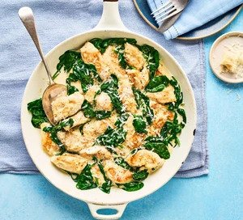

Spinach Chicken

Description
Enjoy our creamy spinach chicken with plenty of sauce and rice or potatoes on the side. Serving four, it's an ideal midweek dinner for a family.
Ingredients
- 30g unsalted butter
- 240g baby spinach
- 4 chicken breasts, skin removed, sliced crosswise into strips
- 4 garlic cloves, finely chopped or grated
- 200ml double cream
- 40g Parmigiano Reggiano, finely grated
- cooked rice or potatoes, to serve (optional)
Steps
- Melt half the butter in a large frying pan over a medium heat and gently wilt the spinach, about 2-3 mins. Stir and season well. Remove to a colander to drain.
- If any liquid remains in the pan, pour it away and wipe it out. Melt the rest of the butter in the same pan over a medium heat, swirling it so the base of the pan is covered. Fry the chicken for 1-2 mins, stirring until lightly golden. Season well. Add the garlic and fry for 1 min more, then pour in the cream and simmer for 15 mins, stirring often until the chicken has cooked through - be careful not to let the cream boil.
- Stir in 30g of the cheese and all the spinach, squeezing out any excess liquid first. Simmer for another 5 mins until the cheese has melted and the chicken is cooked through. To check the chicken is ready, pierce the thickest part of the meat to ensure the juices run clear.
- Scatter with the remaining cheese and serve the chicken with plenty of the sauce, alongside rice or potatoes, if you like.
Nutrition: Per serving (4)
- kcal: 540
- fat: 40g
- saturates: 21g
- carbs: 2g
- sugars: 1g
- fibre: 1g
- protein: 43g
- salt: 0.39g
You may also like: Protein Pancakes, Egg Wraps
Back to homepage